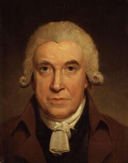
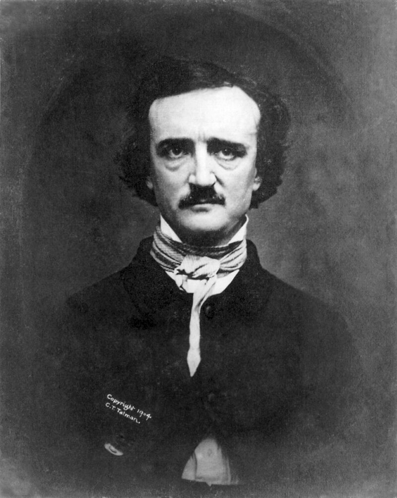
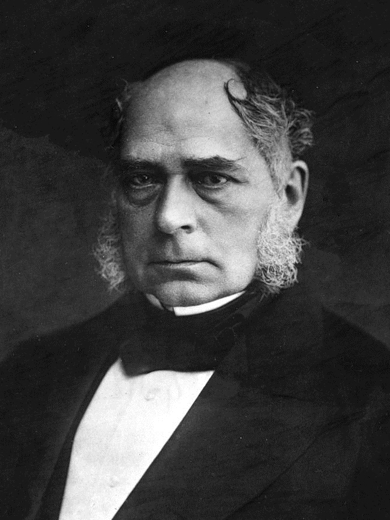
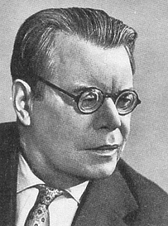
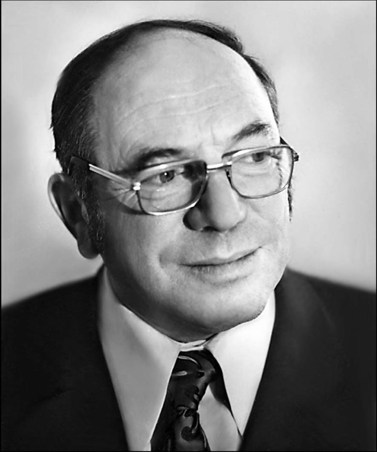
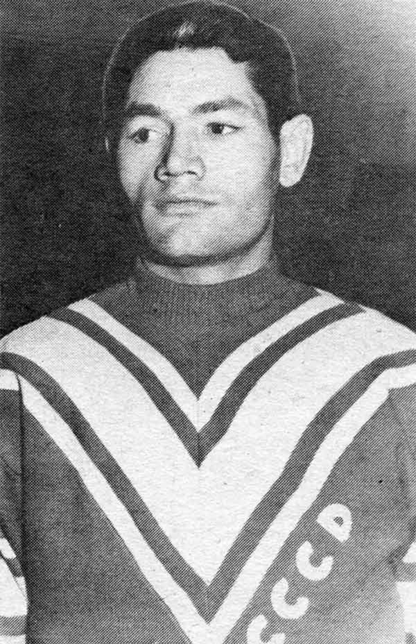
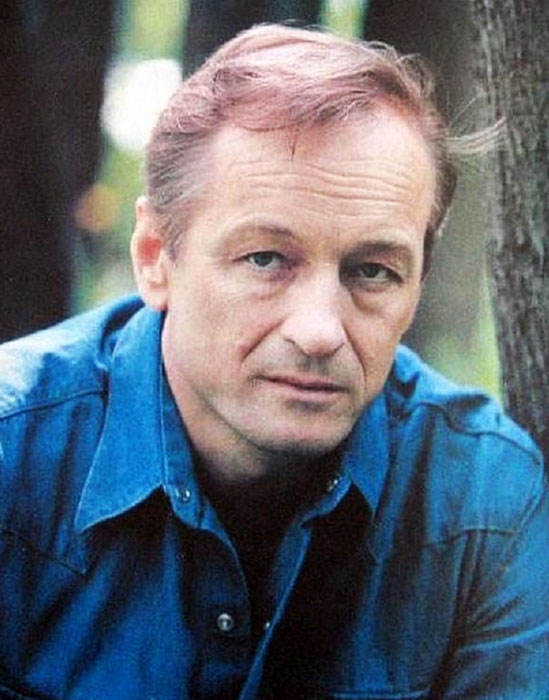

1544
Родился Франциск II - монарх из династии Валуа. Король-консорт Шотландии с 24 апреля 1558 года и король Франции с 10 июля 1559 года.

1736
Родился Джеймс Уатт - шотландский инженер, изобретатель-механик, создатель универсального парового двигателя, чл. Эдинбургского королевского общества (1784), Лондонского королевского общества (1785), Парижской АН (1814); поч. д-р права Университета Глазго (1806). Ввёл первую единицу мощности — лошадиную силу. Его именем названа единица мощности — Ватт.
1809
Родился Эдгар Аллан По (Edgar Allan Poe) - американский писатель, литературный критик. Представитель американского романтизма. Один из основоположников жанра детектива.
1813
Родился Генри Бессемер - английский изобретатель. С 1879 г. член Лондонского королевского общества, возведён в рыцарское достоинство. Имел свыше 100 патентов в различных областях техники. Мировую известность приобрёл благодаря изобретению прогрессивного для того времени способа массового производства стали (1856), получившего название бессемеровский процесс.
1839
Родился Поль Сезанн - французский живописец, один из основателей постимпрессионизма.

1865
Родился Валентин Серов -российский живописец, график, сценограф.

1900
Родился Михаил Исаковский - русский советский поэт, поэт-песенник, прозаик, переводчик. Герой Социалистического Труда (1970). Лауреат двух Сталинских премий первой степени (1943, 1949).
1919
Родился Леонид Канторович - российский математик и экономист, академик АН СССР (1964). По окончании Ленинградского университета (1930) преподавал там же (1932–1960, профессор с 1934). В 1940–1964 гг. работал в Ленинградском отделении Математического института АН СССР. Участвовал в создании Сибирского отделения АН СССР, в 1958–1971 гг. работал в Институте математики этого отделения, в 1971–1976 гг. – в Институте управления народным хозяйством Государственного комитета Совета министров СССР по науке и технике, с 1976 г. – во Всесоюзном НИИ системных исследований Госплана и АН СССР. Лауреат Сталинской премии (2-й степени за 1948), Ленинской премии (1965), Нобелевской премии (1975, совместно с Т. Ч. Купмансом).
1920
Родился Хавьер Перес де Куэльяр - перуанский дипломат, пятый генеральный секретарь ООН с 1 января 1982 года по 31 декабря 1991 года. Непродолжительное время (с 2000 по 2001 годы) был премьер-министром Перу.

1930
Родился Иван Трегубов - советский хоккеист, защитник. Олимпийский чемпион и чемпион мира 1956 года, лучший защитник мира 1958 и 1961 годов. Заслуженный мастер спорта СССР (1956).
1937
Родился Михаил Ножкин - советский и российский актёр театра и кино, поэт, поэт-песенник, музыкант, народный артист РСФСР (1980), член Союза писателей России. Почётный гражданин Ржева (2008).
